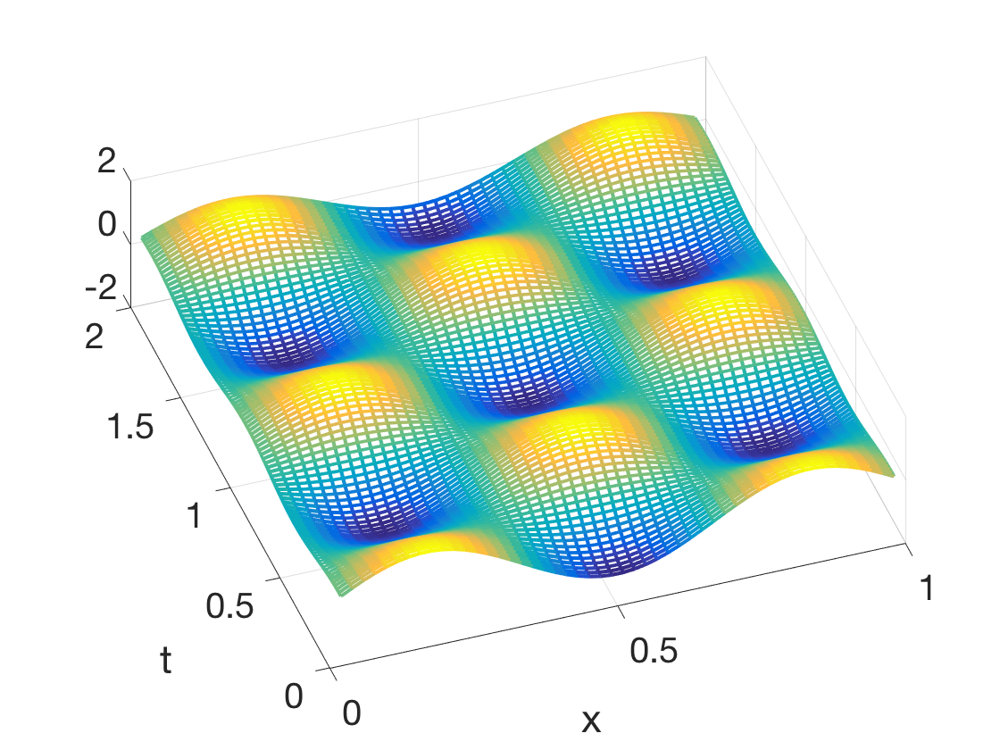

Additional Examples 8.2
1 Show that \(u(x,t) = e^{-4(x^2+6tx+9t^2)}\) is a solution of the wave equation \(u_{tt}=9u_{xx}.\)
Taking derivatives,
\begin{eqnarray*}
u_t &=& -(24x+72t) e^{-4(x^2+6tx+9t^2)}\\
u_{tt} &=&[-72+(24x+72t)^2] e^{-4(x^2+6tx+9t^2)}\\
u_x &=& -(8x+24t) e^{-4(x^2+6tx+9t^2)}\\
u_{xx} &=&[-8+(8x+24t)^2] e^{-4(x^2+6tx+9t^2)}\\
\end{eqnarray*}
Thus \(u_{tt}=9u_{xx}.\)
2 Use the Finite Difference Method with step sizes \(h=k=0.02\) to plot the solution of the wave equation
\[ \left\{
\begin{array}{l}
u_{tt} = \frac{1}{2}u_{xx}\\
u(x,0)=\sin 3\pi x\\
u_t(x,0)=0\\
u(0,t)=u(1,t)=0
\end{array} \right. \]
on \(0\leq x \leq 1, 0\leq t \leq 2.\)

Set \(c=\frac{1}{\sqrt{2}}, \sigma = ck/h\) and solve (8.34) forward in time. At the \(j\)th time step, the approximate solution is an \(m\)-vector
\(w_j,\) representing the solution at \(x_j\) where \(x_j = a+jh\) for \(j=1,\ldots, m.\) More precisely,
\(w_0 =
\left[\begin{array}{c}
f(x_1)\\
\vdots\\
f(x_m)
\end{array}\right],\ \ \ \
w_1 = \frac{1}{2}A
\left[\begin{array}{c}
f(x_1)\\
\vdots\\
f(x_m)
\end{array}\right],\) and for \(j>1,
w_{j+1} = Aw_j-w_{j-1}\)
where \(
A=\left[\begin{array}{ccccc}
2-2\sigma^2&\sigma^2\\
\sigma^2&2-2\sigma^2&\sigma^2\\
&\ddots&\ddots&\ddots\\
&&&&\sigma^2\\
&&&\sigma^2&2-2\sigma^2
\end{array}\right].
\)
Plotting the resulting vectors \(w_j\) results in the following plot.
